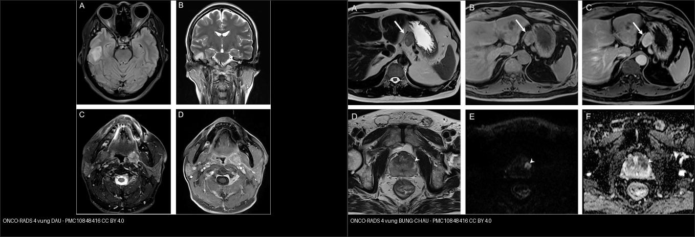
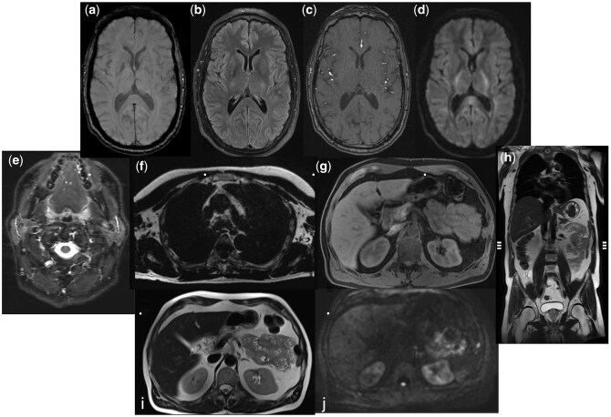
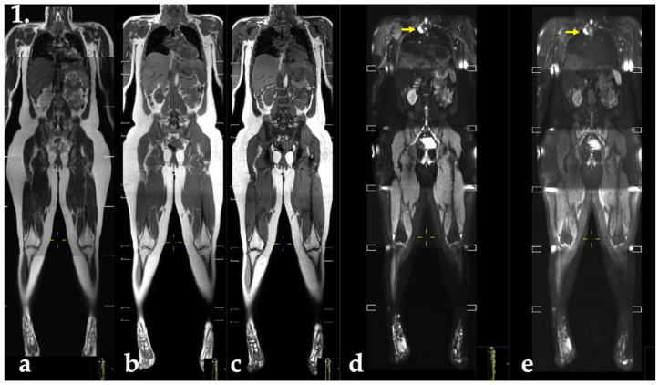
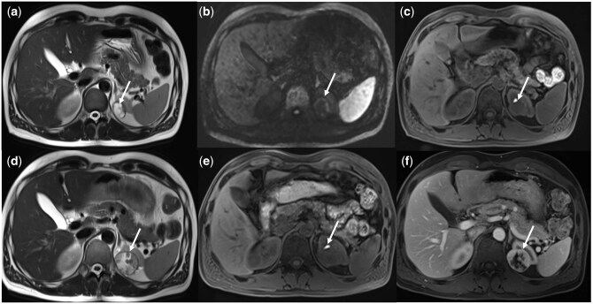
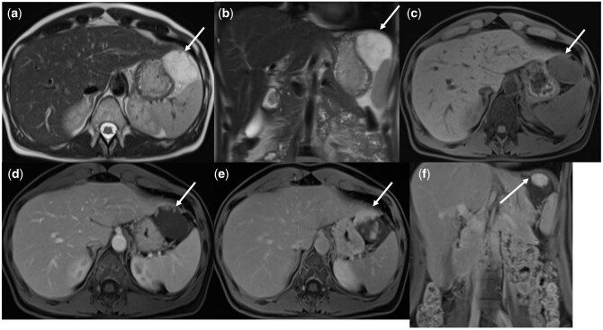
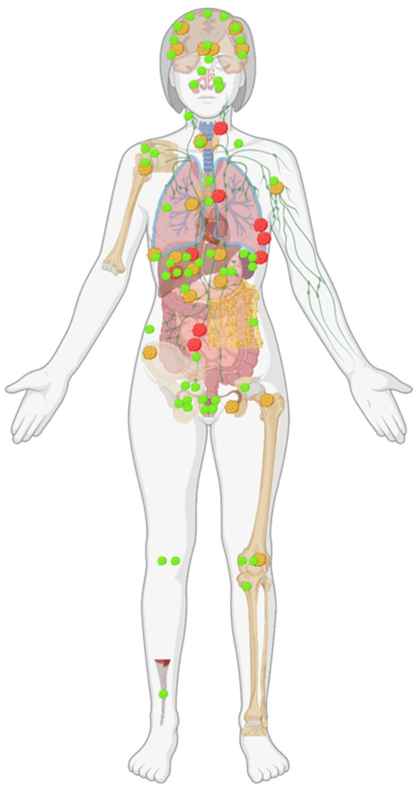
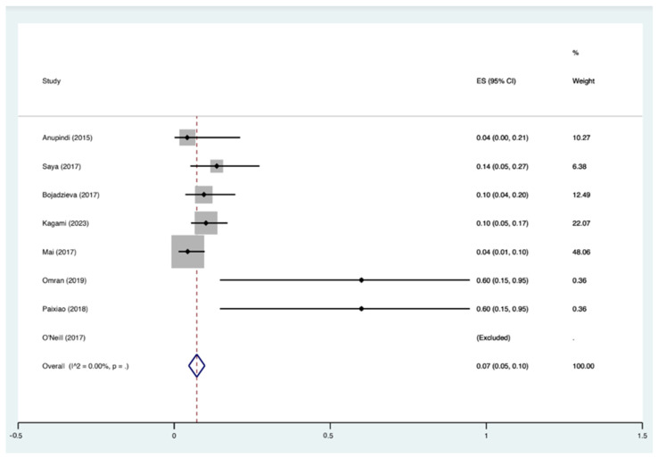

199 — Quy trình xét nghiệm gen & tầm soát người thân trong hội chứng ung thư di truyền / Genetic testing workflow & cascade screening in hereditary cancer syndromes
Tags: pattern:tam-soat-ung-thu-di-truyen vung:toan-than score:ONCO-RADS protocol:WB-MRI incidentaloma:ton-thuong-toan-than
Mức chắc chắn (certainty): tổng hợp y văn (literature synthesis) — nhóm tự biên từ y văn mở (Radiol Adv 2026 PMC13008331, J Clin Med 2024 PMC10931931, Eur Radiol 2026 PMC13035607, Cancers 2022 PMC8773910, Cancer Imaging 2024 PMC10848416, Cancers 2025 PMC11763526, Fam Cancer 2024 PMC11153258), số liệu lấy nguyên từ bài gốc.
1. Tổng quan — "ai gửi gen" và tại sao CĐHA là mắt xích tầm soát
- Hội chứng ung thư di truyền (hereditary cancer syndrome): đột biến dòng mầm (germline) gen ức chế u/ sửa chữa ADN truyền trội → nguy cơ ung thư sớm, nhiều ổ, hai bên, tái phát. Ví dụ: TP53 (Li-Fraumeni — LFS), SDHx (u cận hạch/pheo di truyền), mất bù sửa chữa lệch (CMMRD — constitutional MMR deficiency), RB1 (retinoblastoma di truyền), BRCA1/2, MLH1/MSH2/MSH6/PMS2 (Lynch), PKD1/PKD2 (bài 157).
- WHY tầm soát bằng hình ảnh, không bằng xét nghiệm máu đơn thuần: ung thư ở nhóm này xuất hiện ở giai đoạn chưa có triệu chứng và có thể ở nhiều cơ quan cùng lúc → cần một phương thức bao phủ toàn thân, độ tương phản mô mềm cao, không tia xạ vì bệnh nhân phải chụp lặp lại hằng năm nhiều thập kỷ (nhóm LFS nhạy cảm bức xạ → tránh CT/PET). Đó là lý do WB-MRI (whole-body MRI) thay thế PET/CT cho tầm soát ở LFS/CMMRD.
- TẠI SAO WB-MRI thấy được tổn thương (vật lý): dựa vào khác biệt T1/T2 của tủy xương, mô mềm, dịch + khuếch tán (DWI) — tế bào ác đặc → ADC thấp, DWI sáng — và các chuỗi ức mỡ (DIXON/STIR/TIRM) làm nổi tổn thương trong mỡ. FLAIR sọ bắt tổn thương não; HASTE/T2 khảo sát tạng; DWI toàn thân là chuỗi "chốt" bắt u.
- Ngưỡng định lượng nằm lòng:
- Nguy cơ nền LFS: nguy cơ ung thư ~22% ở tuổi 5, ~41% ở tuổi 18, gần 100% ở tuổi 70 (PMC10931931) → chính đáng chụp hằng năm, bắt đầu từ năm đầu đời.
- Hiệu quả phát hiện (yield): WB-MRI tầm soát người nguy cơ cao phát hiện ung thư 5–10%; ở người bình thường/nguy cơ thấp chỉ 1–2% (PMC13008331). Gộp 8 nghiên cứu, 506 người mang TP53: 36/506 = 7,1% ung thư mới, tỉ lệ gộp 7% (95% CI 5–10) (PMC10931931).
- Phản ứng phụ của tầm soát: phát hiện tình cờ lên tới 97% các ca tầm soát thông thường → cần đồng thuận trước (consent) + báo cáo chuẩn + quản lý rõ (PMC13008331).
- Quy trình "ai gửi gen → tầm soát người thân (cascade)": khi một người (index case) mang đột biến, người thân bậc một có 50% nguy cơ; tầm soát dây chuyền (cascade) tìm người lành mang gen bằng xét nghiệm điểm đột biến đã biết của gia đình. Tại một trung tâm Anh, trung bình 1,73–1,74 xét nghiệm gia đình cho mỗi index BRCA1/2 trong 2 năm; ở Lynch 42,2% xét nghiệm tiền triệu chứng là nam so với 25,8% ở BRCA1/2 (nghĩa là cần chủ động mời cả nam) (PMC11153258).
2. Mẫu hình + gamut theo HỘI CHỨNG & CƠ QUAN
- LFS (TP53): đa u sớm — ung thư vú, sarcoma mô mềm/xương, u não, tuyến thượng thận (carcinoma), leukemia. Trên WB-MRI: khối mô mềm/bone DWI sáng/ADC thấp, diễn tiến theo các lần chụp. Tránh GBCA (thuốc đối quang từ) lặp lại vì lưu kim loại gadolinium (PMC10931931).
- SDHx (u cận hạch/pheo): khối giàu mạch ở bụng/ngực/đầu-cổ — kết hợp với ĐTĐ (bài 168); WB-MRI + MIBG/DOTATATE.
- CMMRD (mất bù MMR): nhiều u ở trẻ (u não, lymphoma, u đường tiêu hóa ruột non/đại tràng) → WB-MRI nền + tầm soát ruột (nội soi).
- Retinoblastoma di truyền (RB1): nguy cơ u xương/hoại tử mô mềm thứ phát trong trường xạ trị → WB-MRI không tia.
- Lynch (MMR) / FAP / BRCA / HLRCC (FH) / VHL: tầm soát theo cơ quan (đại tràng/nội soi, MRI vú, MRI gan–thận — bài 156, 377), WB-MRI là bổ trợ.
- Gợi nhớ "L-S-C-R" khi cân nhắc WB-MRI tầm soát nguy cơ cao: Li-Fraumeni (TP53) · SDHx · CMMRD · RB1 di truyền.
3. Bảng so sánh phân biệt (ma trận đối chiếu)
| Thực thể (entity) | Hình ảnh điển hình | Chốt vào (rule-in) | Chốt loại (rule-out) | Gợi ý xác nhận |
|---|---|---|---|---|
| U ác thật (true positive) | Khối đặc DWI sáng / ADC thấp, bờ không đều, lớn dần giữa các lần chụp, có thể nhiều ổ | DWI sáng + ADC thấp + tăng kích thước theo thời gian | Ổn định nhiều năm, tín hiệu mỡ/dịch thuần → lành | Mô bệnh học; so chuỗi ảnh cũ (PMC13008331) |
| Dương tính giả (false positive) | Ngấm thuốc ở thành hầu/hạch nhỏ/tuyến ức/tuyến vú lành; nốt "bắt gặp" thoáng qua | Tín hiệu lành ở mọi chuỗi + tự mất ở lần chụp sau | DWI sáng dai dẳng + lớn lên → không được coi là lành | Chụp lại 3–6 tháng; MRI khu trú (PMC13008331, PMC13035607) |
| Tổn thương bị bỏ sót ở lần đầu (miss) | Tổn thương thành ngực nhỏ, chỉ hiện trên 1 lát/thì — nhìn thấy ở lần chụp 1 năm sau | Chỉ 1 lát + vị trí "khuất" (thành ngực/thành bụng) | Thấy rõ trên ≥ 2 chuỗi → ít có nguy cơ bỏ sót | Đọc có hệ thống theo vùng; DWI+HASTE (PMC13035607) |
| Phì đại/hạch lành (mimic) | Hạch bẹn/nách ngấm đối xứng, hình bầu dục, có rốn mỡ | Đối xứng + rốn mỡ + < 1 cm | Bờ tròn, không rốn, lớn dần → nghi ác | Theo dõi; siêu âm bổ trợ |
| Tổn thương ONCO-RADS 4 (nghi ác) | Khối/tổn thương tín hiệu bất thường, ngấm hoặc DWI sáng, chưa chắc mô học | ONCO-RADS 4 = "nghi ác" → chỉ định xác minh (sinh thiết/chụp bổ trợ) | ONCO-RADS 1–2 (bình thường/lành chắc) → không can thiệp | ONCO-RADS 5 = "rất nghi ác" → xử trí như ung thư (PMC10848416) |

Trái: tổn thương ONCO-RADS 4 vùng đầu (T2/FLAIR). Phải: ONCO-RADS 4 vùng bụng–chậu (khối cạnh thận/tiểu khung). Cùng mức "nghi ác" → đều cần xác minh. Nguồn: Hu YS et al., Cancer Imaging 2024 (PMC10848416), CC BY 4.0. Ảnh ghép letterbox.- Ý nghĩa ONCO-RADS (5 mức): 1 bình thường · 2 lành chắc · 3 có thể lành · 4 nghi ác · 5 rất nghi ác. Tỉ lệ ung thư xác nhận theo mức: 0,1% (mức 2) · 5,4% (mức 3) · 42,9% (mức 4) · 75% (mức 5) trong 2.064 người tầm soát (2,1% có mức ≥ 4; 1,2% ung thư) (PMC10848416).
4. Protocol WB-MRI + hệ phân độ (ONCO-RADS) + flowchart
- Khi nào chỉ định (chỉ nguy cơ cao): hội chứng có chỉ định rõ — LFS (TP53), SDHx, CMMRD, RB1 di truyền; không dùng WB-MRI tầm soát người nguy cơ thấp đại trà (yield 1–2%, dương tính giả/overdiagnosis, chưa có bằng chứng cải thiện sống còn) (PMC13008331).
- Chuỗi xung tối ưu (bằng chứng mới, không cản quang): nghiên cứu hai trung tâm (113 người LFS, 188 tổn thương: 38 ác, 120 lành, 30 chưa rõ) cho thấy tổ hợp FLAIR sọ + WB-HASTE (T2) + WB-DWI trục phát hiện toàn bộ tổn thương ác mới → protocol ngắn, không GBCA, giảm gánh nặng cho bệnh nhân (PMC13035607). Với đa chuỗi kinh điển vẫn cần TIRM/T2 coronal + DIXON T1 (PMC8773910, PMC13008331).
- Lịch tầm soát LFS: hằng năm: WB-MRI + MRI sọ não (từ năm đầu đời theo đồng thuận quốc tế); MRI vú riêng ở nữ mang gen (PMC10931931).
- Trường nhìn & protocol theo ONCO-RADS 2021: protocol chuẩn quét đỉnh đầu → bàn chân (hội chứng nguy cơ cao); protocol ngắn quét đỉnh đầu → giữa đùi (tầm soát người không triệu chứng) (PMC11763526).
- Báo cáo: dùng ONCO-RADS để chuẩn hóa mức nghi; dương tính giả hay gặp (ngấm thành hầu, nốt tuyến giáp/vú lành) → tránh can thiệp không cần thiết (PMC13008331, PMC13035607).

Các chuỗi của một protocol WB-MRI tầm soát: SWI sọ (a), FLAIR (b), MRA TOF (c), DWI b = 800 (d), T2 (e–f)… Nguồn: Kierans AS et al., Radiol Adv 2026 (PMC13008331), CC BY 4.0.flowchart TD
A[Nghi hoi chung ung thu di truyen] --> B{Tieu chuan gui gen?}
B -->|U som, nhieu o, hai ben, tien su gia dinh| C[Xet nghiem gen dong mam index case]
B -->|Khong| Z[Khong gui gen - theo doi thuong quy]
C --> D{Co dot bien gay benh?}
D -->|Khong| Z
D -->|Co| E[Xac dinh hoi chung: TP53, SDHx, CMMRD, RB1, BRCA, MMR...]
E --> F[WB-MRI hang nam +/- MRI so nao, MRI vu]
E --> G[Tam soat cay chuyen: nguoi than bac 1 co 50% nguy co]
F --> H{ONCO-RADS}
H -->|1-2| I[Khong can can thiep]
H -->|3| J[Theo doi 3-6 thang]
H -->|4-5| K[Xac minh: sinh thiet / chup bo tro]
K --> L{U ac that hay duong tinh gia?}
L -->|Ac| M[Dieu tri da chuyen khoa]
L -->|Gia| N[Theo doi, tranh can thiep qua muc]
5. Biến thể bình thường và cạm bẫy
- Tỉ lệ dương tính giả cao là bản chất của tầm soát: yield thấp (nguy cơ thấp 1–2%) + phát hiện tình cờ tới 97% → luôn giải thích trước; kết quả mức 3 (5,4% ung thư) không được xử trí như mức 4 (42,9%).
- Không phải hội chứng nào cũng cần WB-MRI: chỉ LFS/SDHx/CMMRD/RB1 có chỉ định rõ; BRCA/Lynch tầm soát theo cơ quan (vú/đại tràng) — dùng WB-MRI đại trà không đúng.
- Cạm bẫy bỏ sót: tổn thương thành ngực/thành bụng nhỏ chỉ hiện 1 lát có thể bỏ lần đầu, chỉ thấy ở lần chụp 1 năm sau (PMC13035607) → đọc theo vùng có checklist, không chỉ DWI.
- Cạm bẫy thuốc đối quang từ: khuyến cáo hạn chế GBCA lặp lại ở LFS (lưu gadolinium) → ưu tiên protocol không cản quang (FLAIR + HASTE + DWI).
- Tâm lý–đạo đức: thông tin bất định (mức 3) gây lo lắng, chụp thêm, chi phí; báo cáo thân thiện với người bệnh kèm tư vấn di truyền (PMC13008331).
- Cascade là "xét nghiệm điểm đột biến", không phải giải trình tự cả gen: tránh chi phí và tránh "biến thể không rõ ý nghĩa" ở người thân (PMC11153258).
6. Tự lượng giá — Blind Quiz
Ca 1 — Người lành mang TP53, chụp WB-MRI nền (coronal, nhiều chuỗi).

- Hỏi: đây là chuỗi gì? Vì sao dùng ức mỡ? Nhìn cột ảnh, dấu hiệu bất thường nằm ở đâu?
Bấm để hiện đáp án (findings + chẩn đoán)
- Findings: ảnh coronal toàn thân: (a) T2/TIRM, (b) T1 DIXON in-phase, (c) out-of-phase (giảm tín hiệu tủy)… mũi tên vàng chỉ vùng bất thường ở ngực trên/vai cần xác minh.
- Cơ chế: chuỗi ức mỡ/out-of-phase triệt mỡ nền → tổn thương mô mềm/tủy bệnh nổi rõ; DIXON tách nước–mỡ giúp định tính mỡ/dịch.
- Chẩn đoán: ca nằm trong chương trình tầm soát LFS — 19/61 người (31%) cần xác minh, 3 người (16%) phát hiện ung thư không triệu chứng.
- Nguồn: Omran M et al., Cancers 2022 (PMC8773910), CC BY 4.0.
Ca 2 — Người lành mang gen, WB-MRI phát hiện khối.

- Hỏi: dấu hiệu nào gợi tổn thương ác thật? Khác gì ca 3?
Bấm để hiện đáp án (findings + chẩn đoán)
- Findings: khối tín hiệu bất thường nhiều mặt cắt, mũi tên chỉ rõ trên nhiều chuỗi (T2/DWI/T1 sau tiêm), tăng theo dõi.
- Chẩn đoán: dương tính thật — xác nhận ung thư. Chốt: thấy trên ≥ 2 chuỗi + DWI sáng.
- Nguồn: Kierans AS et al., Radiol Adv 2026 (PMC13008331), CC BY 4.0.
Ca 3 — Bệnh nhân không triệu chứng, WB-MRI có "ổ bất thường" ở vùng hầu.

- Hỏi: vì sao đây là dương tính giả? Cách tránh can thiệp không cần thiết?
Bấm để hiện đáp án (findings + chẩn đoán)
- Findings: ngấm thuốc ở thành hầu và cấu trúc lành khác, không có đặc điểm ác trên các chuỗi → dương tính giả.
- Chốt: tín hiệu lành ở mọi chuỗi + không tăng kích thước → theo dõi, không sinh thiết mù.
- Nguồn: Kierans AS et al., Radiol Adv 2026 (PMC13008331), CC BY 4.0.
Ca 4 — "Bản đồ" phân bố tổn thương phát hiện trên WB-MRI tầm soát (toàn cơ thể).

- Hỏi: tổn thương tập trung ở vùng nào? Vì sao cần bản đồ phân bố?
Bấm để hiện đáp án (findings + chẩn đoán)
- Findings: sơ đồ người xanh = lành, vàng = chưa rõ, đỏ = ác, phân bố khắp cơ thể (đầu-cổ/ngực/bụng-chi).
- Ý nghĩa: nhắc người đọc soát toàn thân theo vùng (không bỏ sót vùng "chỉ 1 lát"), và thấy tỉ lệ chưa rõ (vàng) lớn → nguồn dương tính giả.
- Nguồn: Omran M et al., Cancers 2022 (PMC8773910), CC BY 4.0.
Ca 5 — Đọc đồ thị gộp: WB-MRI phát hiện ung thư ở người mang TP53 bao nhiêu %?

- Hỏi: tỉ lệ gộp là bao nhiêu? Vì sao vẫn cần chuẩn hóa protocol?
Bấm để hiện đáp án (findings + chẩn đoán)
- Findings: 36/506 (7,1%) ung thư mới; tỉ lệ gộp 7% (95% CI 5–10); tuổi trung bình 34,6 ± 16,3.
- Kết luận: WB-MRI hiệu quả phát hiện sớm ở LFS nhưng thiếu chuẩn hóa protocol quốc tế → cần thống nhất (DWI/HASTE/FLAIR).
- Nguồn: Temperley HC et al., J Clin Med 2024 (PMC10931931), CC BY 4.0.
Bài liên quan chéo
- 156 – Hội chứng di truyền u thận: VHL/BHD/HLRCC/TSC/SDH
- 198 – Li-Fraumeni (TP53): Chompret, phổ u lõi & tư vấn di truyền
- 690 – CMMRD ở trẻ: u não, đa polyp, café-au-lait & lịch tầm soát
- 377 – U dây thần kinh dạng đám rối & chuyển dạng MPNST ở NF1 (WB-MRI theo dõi NF1)
- 168 – U tủy thượng thận & u cận hạch (SDHx)
- 514 – Ung thư vú: TNM & MRI lan rộng (MRI vú tầm soát BRCA)
- 157 – Bệnh thận đa nang ADPKD/ARPKD
Ảnh
- Tên file:
199_slug_Modality_SourceID.jpg. Nguồn + giấy phép từng ảnh trongimages/CREDITS.md. - Toàn bộ ảnh dùng đều CC BY 4.0 (PMC13008331, PMC8773910, PMC10848416, PMC10931931) → ảnh ghép letterbox nền đen hợp lệ.
Không dùng để chẩn đoán độc lập khi chưa có người hướng dẫn.